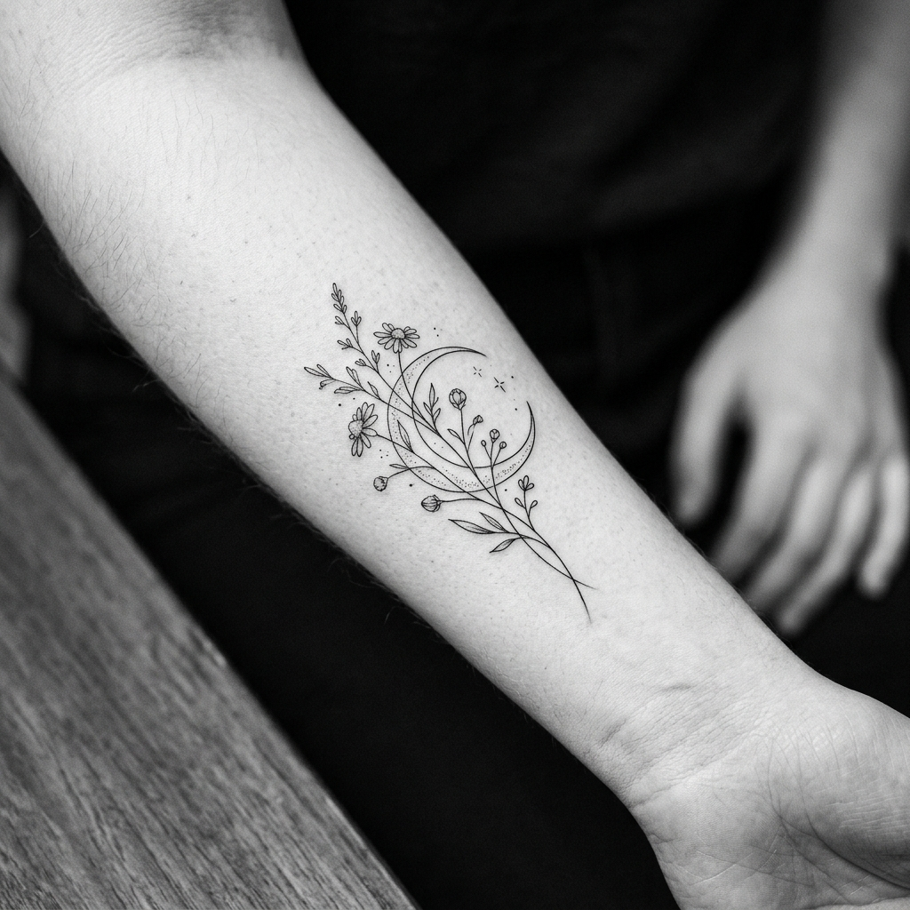
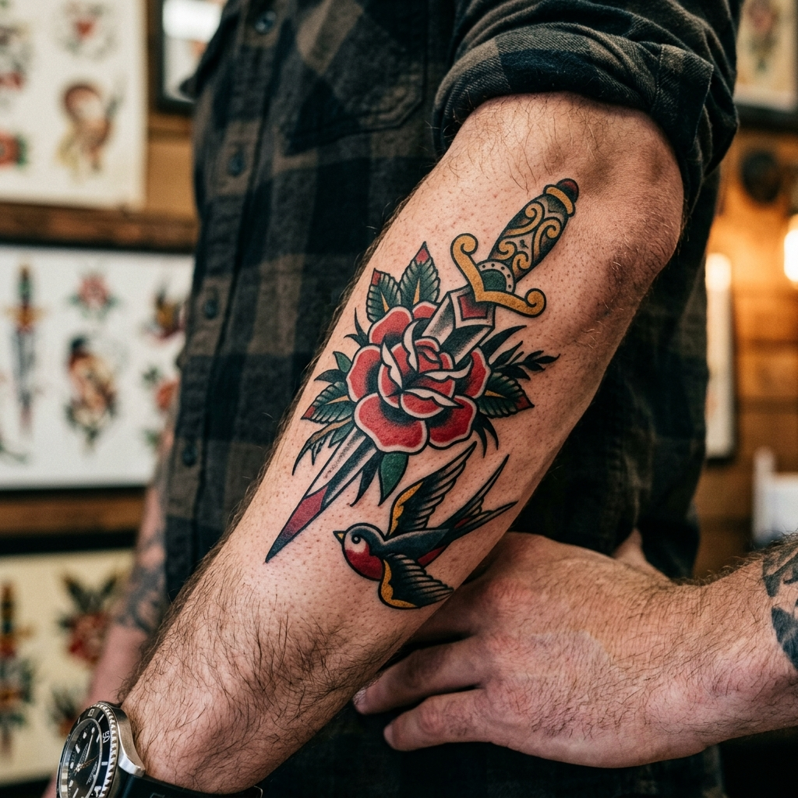
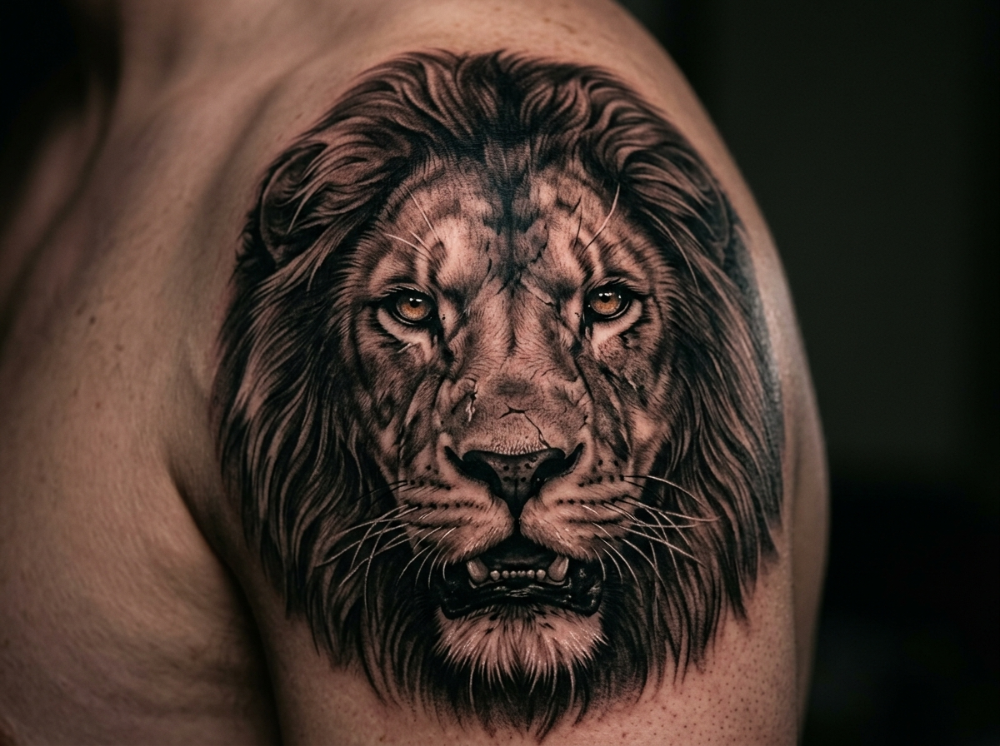
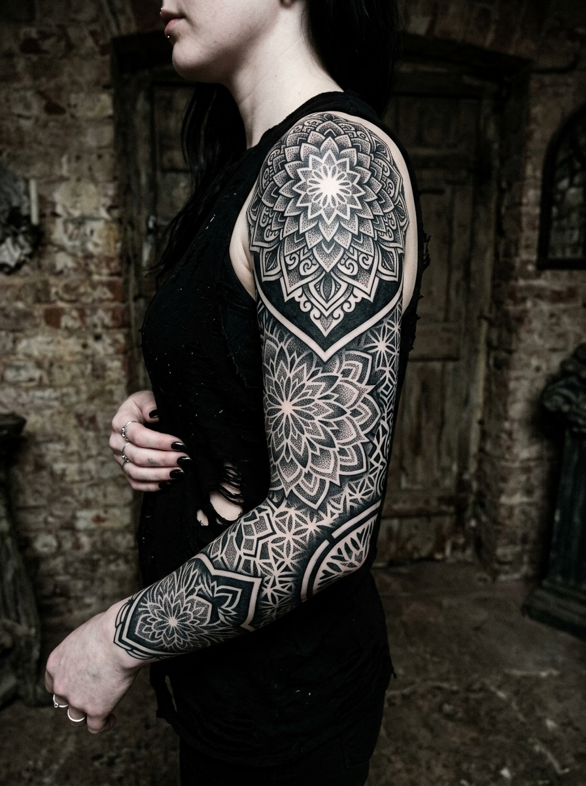
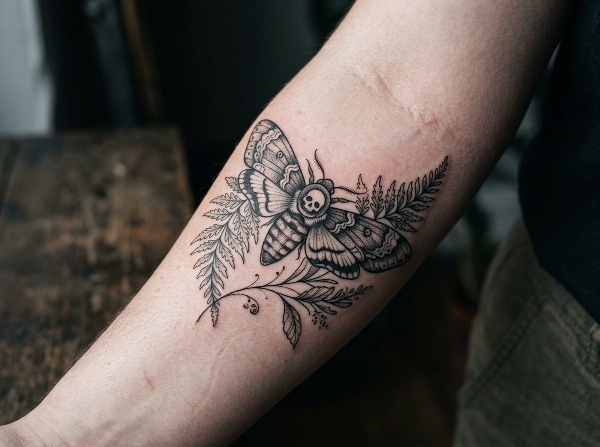
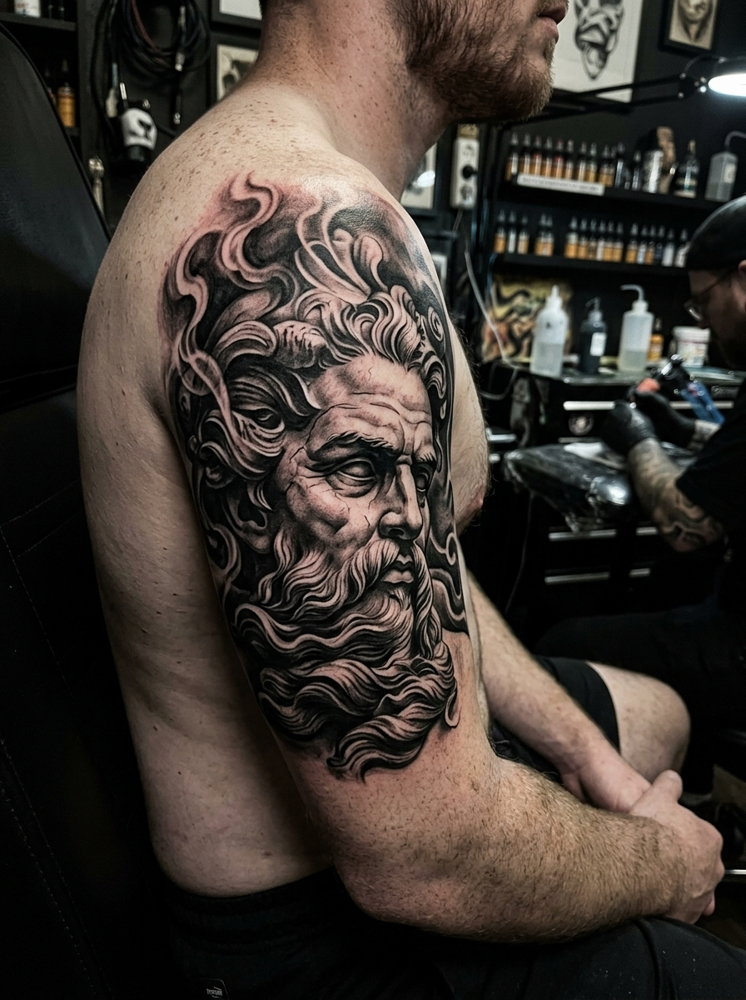
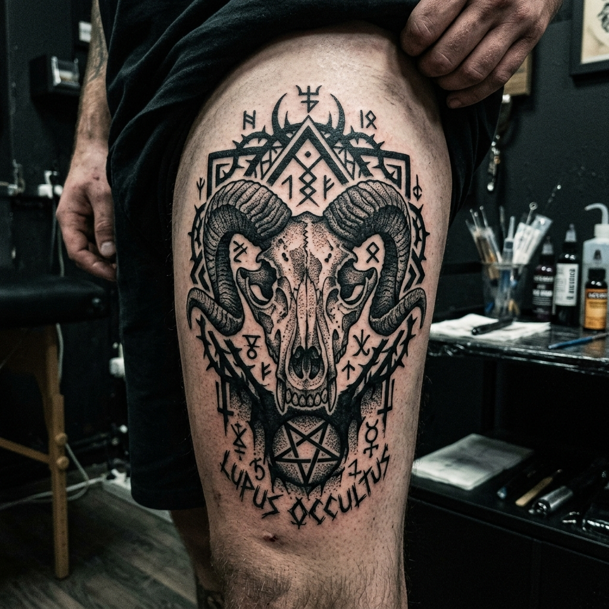

Fine Line
Botânica Lunar
Traços finos e minimalistas em preto e branco executados com agulha de precisão cirúrgica.
Ver detalhes →Design de precisão e arte permanente. Criamos projetos exclusivos gravados com rigor técnico, anatomia equilibrada e elegância atemporal.

Artista residente & criador
Dê o play e acompanhe o processo criativo do estúdio em primeira pessoa, antes mesmo de agendar sua sessão.
Comandado por Lucas "Raven" Costa, o Santo Traço Tattoo Studio foi concebido para atender clientes que buscam uma experiência personalizada, sóbria e artisticamente rigorosa.
Cada trabalho tem base em estudos anatômicos detalhados, valorizando o caimento e o envelhecimento harmonioso do pigmento na pele. Desenvolvemos designs exclusivos a partir de uma escuta atenta das referências e ideias de cada cliente.
Insumos estéreis e descartáveis em ambiente certificado pela vigilância sanitária.
Criações pensadas de forma individualizada, respeitando a curvatura anatômica.
Sessões com hora marcada, garantindo privacidade, foco e tranquilidade total.
Protocolo completo de cicatrização com orientação técnica contínua.
Explore os quatro pilares artísticos do estúdio. Cada imagem foi desenvolvida respeitando as características fundamentais de traço, sombra e contraste de cada modalidade.

Traços finos e minimalistas em preto e branco executados com agulha de precisão cirúrgica.
Ver detalhes →
Alto contraste e sombreado detalhado, proporcionando volume e fidelidade fotográfica.
Ver detalhes →
Preenchimento sólido preto e padrões ornamentais com pontilhismo de alta densidade.
Ver detalhes →Contornos pesados marcantes e imagética clássica atemporal com máxima legibilidade.
Ver detalhes →
Linhas fluidas de espessura micrométrica com hachuras sutis em preto e cinza.
Ver detalhes →
Transição aveludada de tonalidades, textura de mármore e iluminação cinematográfica.
Ver detalhes →
Solidez de preto absoluto, gravura medieval e impacto visual de alto calibre.
Ver detalhes →Composição náutica tradicional com traço grosso característico e sombras sólidas.
Ver detalhes →O estúdio fica em um espaço reservado na região central de São Paulo, projetado para proporcionar conforto acústico e concentração criativa durante todo o procedimento.
Rua Augusta, 1420 — Conjunto 4B
Consolação, São Paulo - SP • CEP 01304-001
Próximo às estações Consolação e Paulista
WhatsApp: +55 (11) 99876-5432
E-mail: contato@santotraco.com.br
Acesso & Transporte: Estacionamento no edifício conveniado ao lado (nº 1445). Acesso rápido via Linha 2-Verde (Estação Consolação) e Linha 4-Amarela (Estação Paulista).
Descrição técnica e conceitual do projeto autoral.